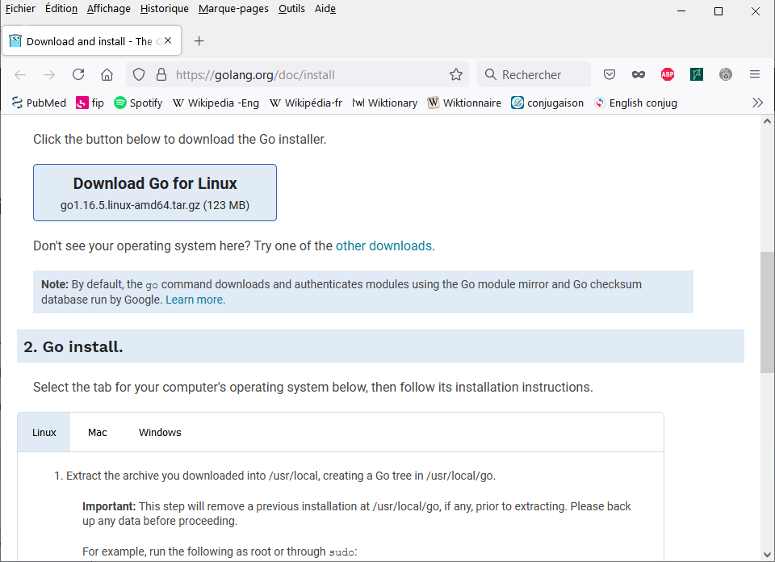
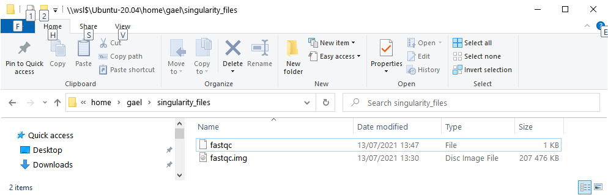

Apptainer
1 Apptainer vs Singularity
Apptainer https://apptainer.org/ is the new name of singularity, since its inclusion in the Linux Foundation.
see https://apptainer.org/news/community-announcement-20211130/
Apptainer provides singularity as a command line link and maintains as much of the CLI and environment functionality as possible. From the user's perspective, very little, if anything, changes.
You should switch your command lines eg:
singularity build|run|exec ... to
apptainer build|run|exec ...
NB all SINGULARITY_ prefix environement variables are
now translated to APPTAINER_ prefix ones.
SINGULARITY_ prefix variables are still recognized but will
generate a warning.
See apptainer-1.0.0 changelog for more information:
https://github.com/apptainer/apptainer/releases/tag/v1.0.0
We encourage you to use apptainer module instead of the
singularity ones as soon as possible. We welcome any
feedback. Please note that in the near future we plan to remove all
singularity modules and keep only apptainer
ones.
2 Documentation
https://apptainer.org/docs/user/main/
The different versions: https://apptainer.org/documentation/
3 Acronyms and definitions
| DAG | Directed Acyclic Graph |
| SIF | Singularity Image Format |
| SingularityCE | Community Edition of Singularity. |
4 Main commands
See https://apptainer.org/docs/user/main/cli.html
All the commands start by apptainer.
Some commands require sudo.
build |
build a container |
inspect |
inspect a container |
pull |
download a container from existing url |
exec |
execute an executable inside the container (Ctrl+C to exit). Require
a script to execute defined after the image. Example:
apptainer exec [exec options...] <container> <command>.
See the difference with run in section Image running |
run |
launch an Apptainer container and execute a runscript if one is
defined for that container. The runscript is a metadata file within the
container that contains shell commands. If the file is present (and
executable) then this command will execute that file within the
container automatically. All arguments following the container name will
be passed directly to the runscript). Example:
apptainer exec [exec options...] <container>. See the
difference with exec in section Image running |
shell -- writable |
enter into the image environment. The prompt becomes
Apptainer>. exit to leave |
5 Installation
https://github.com/apptainer/apptainer/blob/main/INSTALL.md
5.1 On linux
5.1.1 Ubuntu 26.04 (apt)
Tested on Ubuntu 26.04 (WSL2) on 2026-11-21: apptainer 1.4.5, squashfuse 0.5.2 and fuse2fs 1.47.2.
Apptainer is in the universe repository of Ubuntu 26.04:
sudo apt update
sudo apt install apptainer squashfuse fuse2fs
apptainer --version # apptainer version 1.4.5The singularity command is also installed (it runs apptainer).
squashfuse and fuse2fs are not installed with the apptainer package,
but they are required to run the images (.sif files) without extracting
them. Without them, apptainer displays
INFO: squashfuse not found, will not be able to mount SIF or other squashfs files
and extracts each image into a temporary folder of /tmp (several GB per
image), which can end with no space left on device (on
Ubuntu 26.04 in WSL2, /tmp is in RAM). The temporary folder of apptainer
can also be moved to the disk:
mkdir -p ~/apptainer_tmp
export APPTAINER_TMPDIR=~/apptainer_tmp # add this line at the end of the ~/.bashrc file to keep itOptional: sudo apt install gocryptfs (2.6.1 tested), to
avoid the recurrent apptainer message about it.
On older Ubuntu versions, if apt-cache policy apptainer
shows no candidate, use the PPA of the apptainer team (see https://apptainer.org/docs/admin/main/installation.html):
sudo apt install -y software-properties-common
sudo add-apt-repository -y ppa:apptainer/ppa
sudo apt update
sudo apt install -y apptainer squashfuse fuse2fs5.1.2 Any linux (from source)
Uninstall singularity
sudo apt-get remove singularity # or sudo apt-get purge --auto-remove singularityInstallation of dependencies:
sudo apt-get update
# reminder: \ means that the line has a EL but is not finished. WARNING: no space allowed after \
sudo apt-get install -y \
build-essential \
libseccomp-dev \
pkg-config \
uidmap \
squashfs-tools \
squashfuse \
fuse2fs \
fuse-overlayfs \
fakeroot \
cryptsetup \
curl wget gitInstallation of GO:
Retrieve the Linux version of GO https://golang.org/doc/install, by selection the Linux tab below "Go install":

The Download button switches to the Linux version.
Click on download (1.27.4)
A new https://go.dev/dl/ page opens.
Download the file:
go1.27.4.linux-amd64.tar.gz
For older version, use
And take the go1.27.4.linux-amd64.tar.gz version.
Then:
sudo rm -rf /usr/local/go # remove the precedent version of go
sudo cp /mnt/c/Users/gmillot/Desktop/go1.27.4.linux-amd64.tar.gz /usr/local/
sudo tar -C /usr/local -xzf /usr/local/go1.27.4.linux-amd64.tar.gzThen update the .profile file with :
export PATH="/usr/local/go/bin:$PATH" # for apptainerSee protocol 140 for details about .profile update.
Reopen the terminal and check that GO is correctly installed:
go versionApptainer install:
cd # because it seems that singu can only be installed from the $HOME, where the go folder is present, after install of go in the /usr/local/ directory
git clone https://github.com/apptainer/apptainer.git
cd apptainer
./mconfig
cd ./builddir
make
sudo make install
apptainer --versionIf gocryptfs is required, see :
https://github.com/rfjakob/gocryptfs?tab=readme-ov-file#installation
Go is already installed, so skip the first step.
5.2 On windows
It is not possible to install it on Windows directly, only via WLS2.
https://apptainer.org/docs/admin/main/installation.html#installation-on-windows-or-mac
5.3 OnMac
It is not possible to install it on Mac. The only way is to use a Linux virtual Machine.
https://apptainer.org/docs/admin/main/installation.html#installation-on-windows-or-mac
6 Container handling
6.1 Definition file (eq of dockerfile)
Also called recipy.
Must have this format:
Bootstrap: docker
From: ubuntu:20.04
%post
apt-get install openjdk-8-jre-headless
apt-get install wget unzip perl
wget https://www.bioinformatics.babraham.ac.uk/projects/fastqc/fastqc_v0.11.9.zip
unzip fastqc_v0.11.9.zip
chmod 755 /FastQC/fastqc
%environment
export PATH=/FastQC:$PATH
%runscript
exec fastqc "$@"To create a recipy, goes into:
C:\Users\gmillot\Documents\Git_projects\apptainer_files
And create a new fastqc file.
Then copy-paste the code above into that file.
And, from WSL2, copy the file into the linux environment.
cp /mnt/c/Users/gmillot/Documents/Git_projects/apptainer_files/fastqc /home/gael/apptainer_files/6.2 Options of the definition file
6.2.1 Overview
https://apptainer.org/docs/user/main/definition_files.html#definition-files
A definition file has a header and a body.
The header determines the base container to begin with.
The body is further divided into sections that perform things like software installation, environment setup, and copying files into the container from host system, etc.
Example:
Bootstrap: library
From: ubuntu:18.04
Stage: gael_build
%setup
touch /file1
touch ${APPTAINER_ROOTFS}/file2
%files
/file1
/file1 /opt
%environment
export LISTEN_PORT=12345
export LC_ALL=C
%post
apt-get update && apt-get install -y netcat
NOW=`date`
echo "export NOW=\"${NOW}\"" >> $APPTAINER_ENVIRONMENT
%runscript
echo "Container was created $NOW"
echo "Arguments received: $*"
exec echo "$@"
%startscript
nc -lp $LISTEN_PORT
%test
grep -q NAME=\"Ubuntu\" /etc/os-release
if [ $? -eq 0 ]; then
echo "Container base is Ubuntu as expected."
else
echo "Container base is not Ubuntu."
exit 1
fi
%labels
Author d@sylabs.io
Version v0.0.1
%help
This is a demo container used to illustrate a def file that uses all
supported sections.In this example, the header, made of Bootstrap,
From and Stage, tells Apptainer to use a base
Ubuntu 16.04 image from the Container Library.
The stage section just names the section initiated by the header, since several headers (stages) can be in a single definition file. See https://apptainer.org/docs/user/main/definition_files.html#multi-stage-builds
6.2.2 Header
The only keyword that is required for every type of build is Bootstrap. It determines the bootstrap agent that will be used to create the base operating system you want to use. For example, the library bootstrap agent will pull a container from the Container Library as a base. Similarly, the docker bootstrap agent will pull docker layers from Docker Hub as a base OS to start your image.
Starting with Singularity 3.2, the Bootstrap keyword needs to be the first entry in the header section. This breaks compatibility with older versions that allow the parameters of the header to appear in any order.
Preferred bootstrap agents:
library |
images hosted on the Container Library |
docker |
images hosted on Docker Hub |
shub |
deprecated |
scratch |
a flexible option for building a container from scratch |
See https://apptainer.org/docs/user/main/definition_files.html#preferred-bootstrap-agents
6.2.3 Body
%setup |
commands in this section are first executed on the host system outside of the container after the base OS has been installed. Warning: executed outside of the container on the host system itself, and is executed with elevated privileges. Can alter and potentially damage the host |
%file |
copy files into the container (greater safety than using the
%setup section) |
%post |
execute within the container at build time after the base OS has
been installed. The %post section is therefore the place to
perform installations of new applications |
%environment |
defines some environment variables that will be available to the container at runtime |
%runscript |
this content is written to a file within the container that is executed when the container image is run (either via the singularity run command or by executing the container directly as a command) |
%test |
this section is run at the very end of the build process to validate the container |
%labels |
used to add metadata to the file /.singularity.d/labels.json within your container |
%help |
this section is transcribed into a metadata file in the container during the build. This text can then be displayed using the run-help command. |
See https://apptainer.org/docs/user/main/definition_files.html#sections
6.2.4 Best practices
6.3 Image building
cd /home/gael/apptainer_files/
sudo apptainer build fastqc.img fastqcContrary to Docker (protocol 134), the image location is easy to know, as it is specified:

https://apptainer.org/docs/user/main/build_a_container.html
6.4 Image building from a docker image
apptainer build --sandbox my_container.img docker://ubuntu:latest6.5 Image managing
All the commands start with apptainer.
Some commands require sudo.
build |
build an image |
delete |
delete an image from the specified library |
inspect |
inspect an image (display the associated metadata) |
pull |
download an image from existing url |
exec |
execute an executable or a command inside the container (Ctrl+C to exit) |
run |
launch a Apptainer container from the indicated image and execute a runscript if one is defined for that container. The runscript is a metadata file within the container that contains shell commands. If the file is present (and executable) then this command will execute that file within the container automatically. All arguments following the container name will be passed directly to the runscript. Use exit to quit the container env |
shell -- writable |
enter into the image environment. The prompt becomes
Apptainer>. exit to leave |
6.6 Image running
Running an image creates a container and potentially run commands inside it. In such cases the container remains closed. Depending on the options, it is also possible to open the container and be in the container environment with the system and soft inside of the corresponding image. Once opened, we can work inside it. Example:
apptainer run fastqc.imgTo mount a folder, the syntax is the same as for docker:
apptainer run -B $PWD:$PWD fastqc.imgWith -B /src, it directly creates the /src path in the container.
$PWD is the pwd displayed in the console before running the image.
Here it means: 1) before the colon, mount that path inside the container
and 2) after the colon, create inside the image a path (by creating all
the intermediate directories) from the root that is $PWD. Thus, if PWD =
/mnt/c/Users/gmillot/Documents/Git_projects/project_a, it
means that this path is mounted into the container at this destination
inside the container:
/mnt/c/Users/gmillot/Documents/Git_projects/project_a. This
facilitates the use of script inside the container because it looks like
the local folder.
To work in a container with bash:
apptainer shell fastqc.imgDifference between apptainer run and apptainer exec:
| apptainer run | run the default command set for containers based on the specified image. This default command is set within the image metadata when the image is built. You do not specify a command to run when using apptainer run, you simply specify the image file name. As we saw earlier, you can use the apptainer inspect command to see what command is run by default when starting a new container based on an image. |
| apptainer exec | start a container based on the specified image and run the command provided on the command line following apptainer exec <image file name>. This will override any default command specified within the image metadata that would otherwise be run if you used apptainer run. |
6.7 container managing
No container to manage ?
7 Apptainer repositories
https://singularityhub.github.io/ seems deprecated.
8 Apptainer files repositories
Does not exist.
9 Apptainer on the cluster
https://confluence.pasteur.fr/display/FAQA/Singularity@Pasteur
10 Examples
10.1 Coreutils
10.1.1 Definition file from dockerhub
See protocol 134
Bootstrap: docker
From: gmillot/coreutils:8.30
%labels
Author Gael Millot
Version v0.0.110.1.2 Definition file from scratch
C:\Users\gmillot\Documents\Git_projects\apptainer_files
# Coreutils - GNU core utilities
# https://www.gnu.org/software/coreutils/
# v8.30
# base image: ubuntu:16.04 from docker
Bootstrap: docker
From: ubuntu:16.04
%post
apt-get update --fix-missing
# update apt-get
apt-get upgrade
apt-get install -y wget tar xz-utils make gcc dpkg libblkid1 libreadline6
# install the required dependencies
cd /usr/local/
wget http://ftp.gnu.org/gnu/coreutils/coreutils-8.30.tar.xz
tar -xf coreutils-8.30.tar.xz
cd coreutils-8.30
chmod u=rwx configure
export FORCE_UNSAFE_CONFIGURE=1
./configure
make
make install
cd /usr/local/
rm -rf coreutils-8.30
# && apt-get remove -y wget tar xz-utils make gcc # inactivated because generate errors of pkg dependency
# important to remove the dependencies after installation to save space in the image that will be built
apt-get autoremove -y
apt-get clean
rm -rf /var/lib/apt/lists/*
%labels
Author Gael Millot
Version v0.0.110.1.3 Next
Git push on the remote gitlab account, with the correct commit text to clearly identify the versions of each file.
Copy the file:
cp /mnt/c/Users/gmillot/Documents/Git_projects/apptainer_files/apptainer.coreutils.v8.30 /home/gael/apptainer_files/Build the image:
sudo apptainer build /home/gael/apptainer_files/apptainer.coreutils.v8.30.img /home/gael/apptainer_files/apptainer.coreutils.v8.30Contrary to docker, the image is easy to find.
Verify:
ls -laUse:
echo "echo 'Hello world'" | apptainer run apptainer.coreutils.v8.30.imgUse inside the image env:
apptainer run apptainer.coreutils.v8.30.img # or apptainer shell apptainer.coreutils.v8.30.img
echo 'Hello world'
exit10.2 R
See section Coreutils.
By default, R and Rscript executions files are in:
/usr/bin/